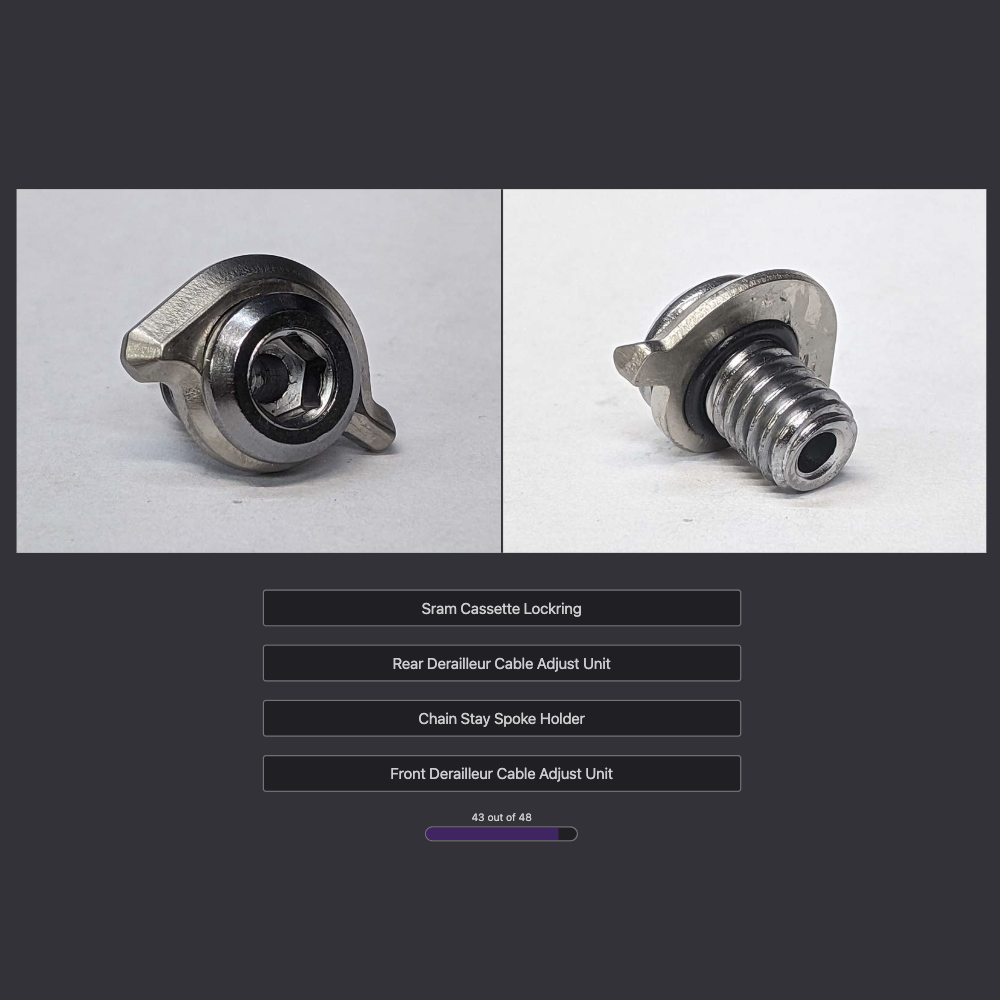

Projects
Name That Part
A fun, and surprisingly tough game. BikeRumor
Challenging. The Radavist
This one is pure sadism. PinkBike
A game designed for bicycle nerds, by a bicycle nerd. Users are shown a small bicycle part and 4 options to choose from. Images are loaded in advance on each selection to keep the game play inturrupted. Stats are collected at the end of each game and sent to the database.
Tech Stack
TypeScript, Express, MySQL
Live Project GitHub RepoErik's Bike Board and Ski Website
Retail website for Erik's Bike, Board and Ski. The largest independently owned outdoor shop in America. Built on VTEX's platform, the website handles search, purchasing, shipping and many other aspects critical to having an online store as well as 30+ physical retail locations around the country.
Tech Stack
React, VTEX, Vanilla JS, CSS Modules
Live ProjectRampar Bikes Website
Website for Rampar Bicycles. Rampar is a bicycle company that is exclusively sold in stores but required a website in order to showcase its products and add credibility to the brand.
Tech Stack
React, VTEX
Live ProjectDynamic Comparison Table Component
A scaling and dynamically loaded HTML table. JSON data is fed in, a fully dynamic comparison table is displayed. Controlled by a single prop object. Columns and Rows highlight to the table cell that is moused over.
Tech Stack
React
GitHub RepoDynamic Navigation
A scaling and self routing navigation menu. JSON data is fed in, a fully dynamic navigation is displayed, complete with submenus.
Tech Stack
React, React Router
GitHub RepoTwin Cities Send It

Database of all grass hills in the Twin Cities and greater surrounding areas that are suitable to ride your bicycle down. Why? Because it's really fun. I built this project to familiarize myself with GraphQL. Complete with photos, videos and maps to each hill, this has become a favorite passion project of mine.
Tech Stack
Vanilla JS, GraphQL, Express, MySQL
GitHub RepoWhat's Still Good?
Full Stack Application for personal use listing the expiration dates of all the food in my kitchen so I may better plan my meals and reduce food waste.
Tech Stack
React, GraphQL, Express, MySQL, Day.js
GitHub RepoGrams Per Dollar Calculator App

Sometimes deciding to upgrade your bike can be a difficult decision. This calculator will give you the dollars per gram (or ounces) for a supplied component upgrade.
Tech Stack
Vanilla JS, Express
GitHub RepoCoffee Brewing Profile App

Proof of concept tool to help at home baristas to keep track of and maintain their coffee brewing techniques. Choose your preferred brewing method and the app frontloads your previous brew into the input fields to cut down on redundancies.
Tech Stack
React JS, TypeScript, Express, Passport, BCrypt, MySQL, WebPack, React Router
GitHub RepoGitHub

My GitHub Profile. Please keep in mind that most of my work lately has been with my current contract account.
GitHub Repos